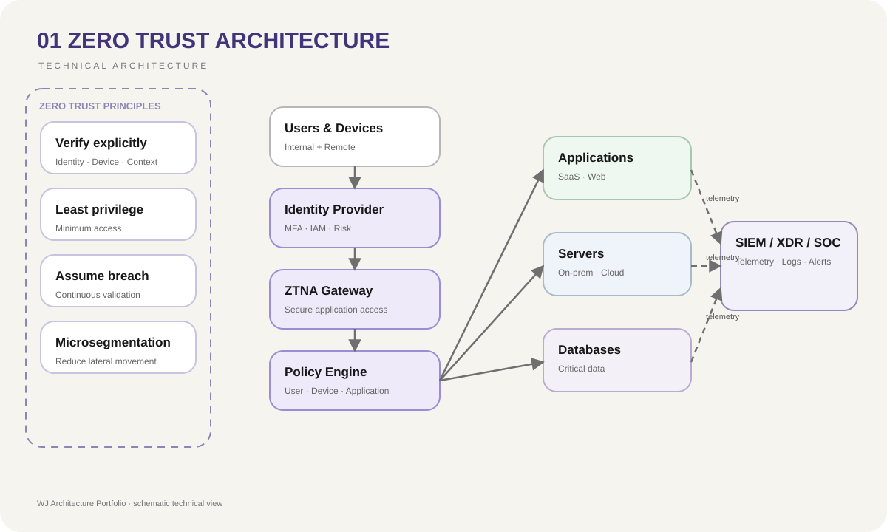

Credenciales comprometidas
La verificación explícita, MFA y autorización por rol reducen el impacto de una identidad comprometida.
01 / Security Architecture
Evaluación comparativa entre una arquitectura perimetral tradicional y un modelo Zero Trust aplicado.
07 / Risk Reduction
La verificación explícita, MFA y autorización por rol reducen el impacto de una identidad comprometida.
La segmentación y el mínimo privilegio limitan rutas innecesarias entre recursos.
Los permisos se asignan según función y necesidad, evitando confianza amplia dentro de la red.
La centralización de eventos y telemetría mejora la detección y el análisis de actividad anómala.
01 / Context
Las arquitecturas de seguridad tradicionales depositan gran parte de su confianza en el perímetro. Una vez autenticado un usuario o dispositivo, puede existir demasiada libertad de movimiento dentro de la red. Esto incrementa el impacto potencial de credenciales comprometidas, accesos remotos inseguros y movimiento lateral entre segmentos.
02 / Objective
Diseñar y evaluar un modelo Zero Trust capaz de reducir la confianza implícita, verificar continuamente identidades y dispositivos y limitar el acceso únicamente a los recursos necesarios para cada usuario, aplicación o servicio.
03 / Architecture
La propuesta combina controles de identidad, ZTNA, mínimo privilegio, microsegmentación, monitoreo continuo y políticas basadas en contexto. El diseño sigue los principios Verify Explicitly, Use Least Privilege Access y Assume Breach, complementados con Defense in Depth.
04 / Diagram

05 / Decisions
El acceso se determina a partir de identidad, dispositivo, contexto y política, no simplemente por ubicación en la red.
Los recursos se separan para reducir rutas de movimiento lateral ante una cuenta o endpoint comprometido.
ZTNA sustituye el concepto de acceso amplio a la red por acceso específico a aplicaciones y servicios.
Los eventos de autenticación, tráfico y seguridad se concentran para análisis y correlación continua.
06 / Stack
08 / Result
El modelo permitió comparar de forma estructurada cómo una arquitectura tradicional y una arquitectura Zero Trust responden ante credenciales comprometidas, movimiento lateral, acceso remoto y necesidades de visibilidad. El proyecto obtuvo una evaluación de 92/100.
08 / Lessons
El principal aprendizaje fue que Zero Trust no depende de un único producto. Su efectividad surge de combinar identidad, segmentación, observabilidad, políticas de acceso y respuesta ante incidentes dentro de una arquitectura coherente.